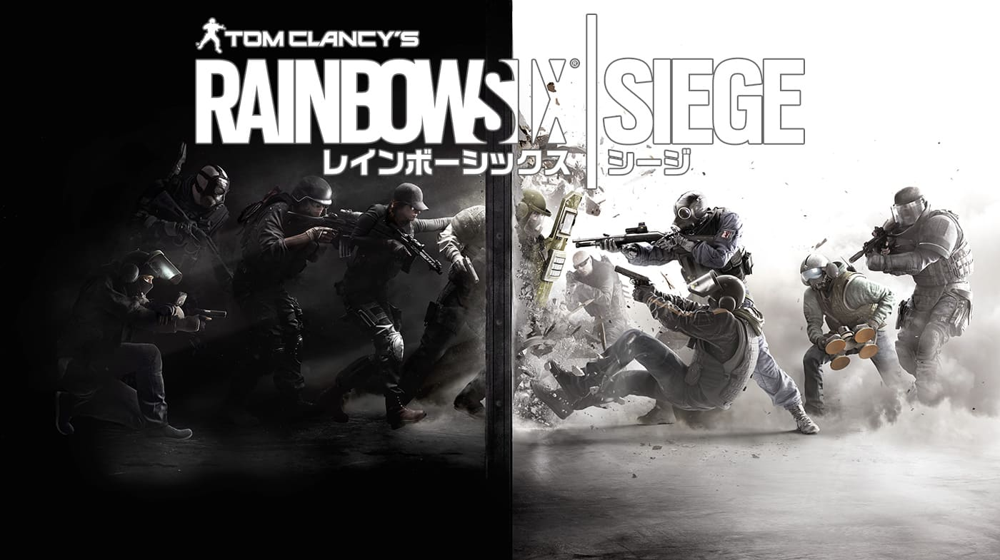
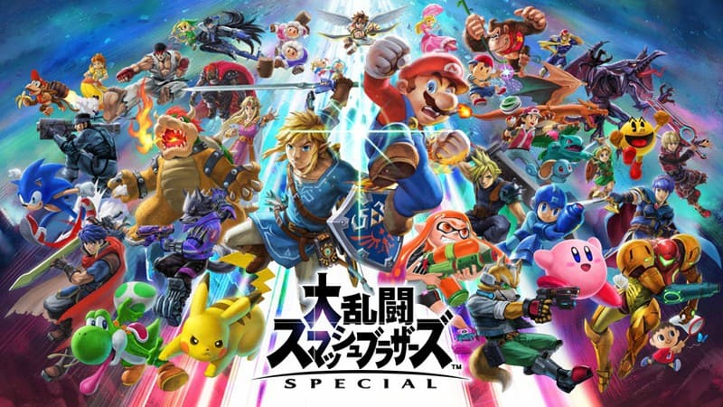
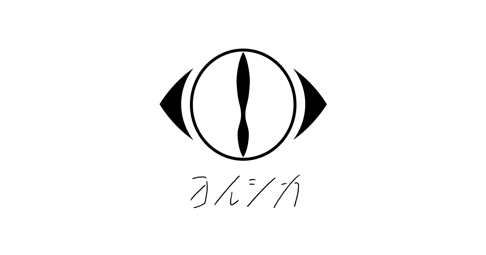
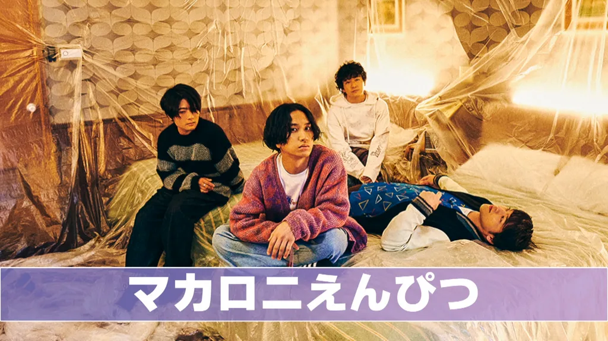
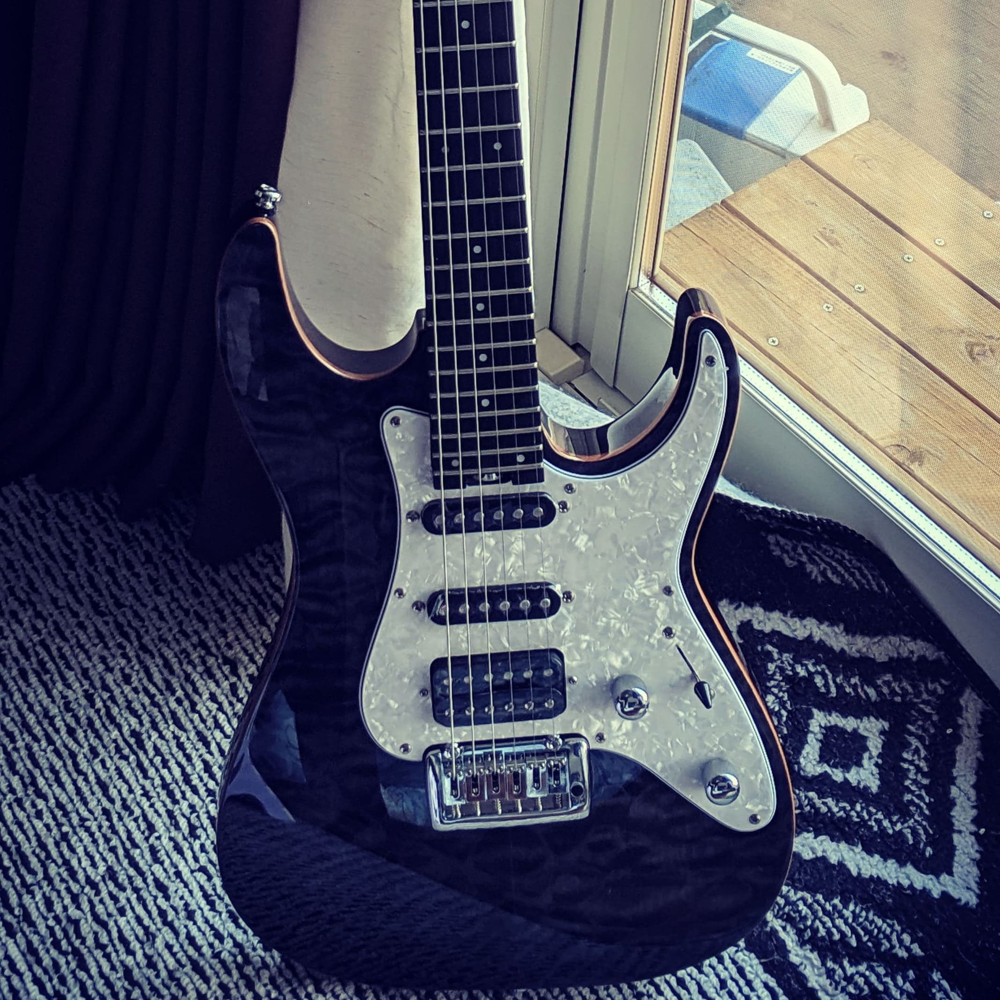

１.ゲーム
1-1.ゲームについて
最近ゲームやってないけど、ゲーム自体は好きなので紹介してきます！
ゲームの中だとFPSを結構やってました。他にも格闘ゲームとか平和なゲームとか色々なゲームやってました！
1-2.FPS
おそらく一番やってたのはFPSです。その中でも長くやってて面白かった順に紹介します！
-

レインボーシックス シージ
-
ApexLegends
-
COD BLACK OPSⅡ
1-3.その他
FPS以外のランキングもどうぞ！
-
GO VACATION
-

大乱闘スマッシュブラザーズ
-
Minecraft
２.音楽
2-1.音楽について
音楽は小さい時から趣味のうちの一つでした！
高校生の部活は軽音楽部だったたから楽器を弾くのも好きです。
2-1.アーティスト・曲
ここでは、おすすめのアーティストと曲を何個か紹介します。
-

ヨルシカ
-
Ado & Vaundy
-

マカロニえんぴつ
一つ目はヨルシカさんの「雨とカプチーノ」です。
一度は聞いてほしい曲のひとつなので、ぜひ聞いてみてください！
今人気の、ONE PIECE FILM RED の劇中歌「逆光」です。
令和の天才コンビから誕生した曲です。もうずっと聞いてます。
マカロニえんぴつの「洗濯機と君とラヂオ」です。
アップテンポな曲で元気が出る曲なので、ぜひ聞いてみて！
2-3.楽器
Sasamoriのやっている楽器はギターです。ドラムとかも少しできます！

ギターを始めたきっかけは、粉ミルクさんみたいになりたいと思ったからです。
粉ミルクさんぐらい弾き語りがうまくなれたらなってずっと思ってます。がんばります！